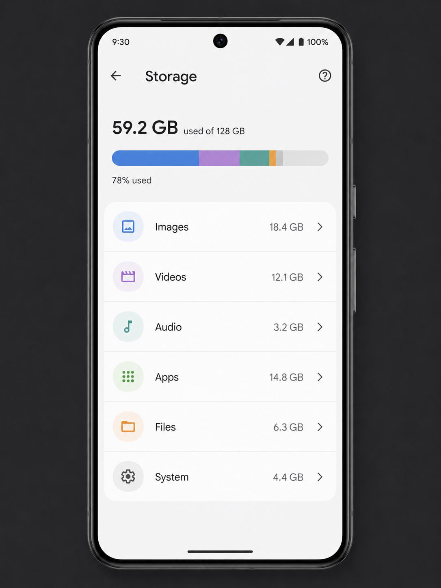
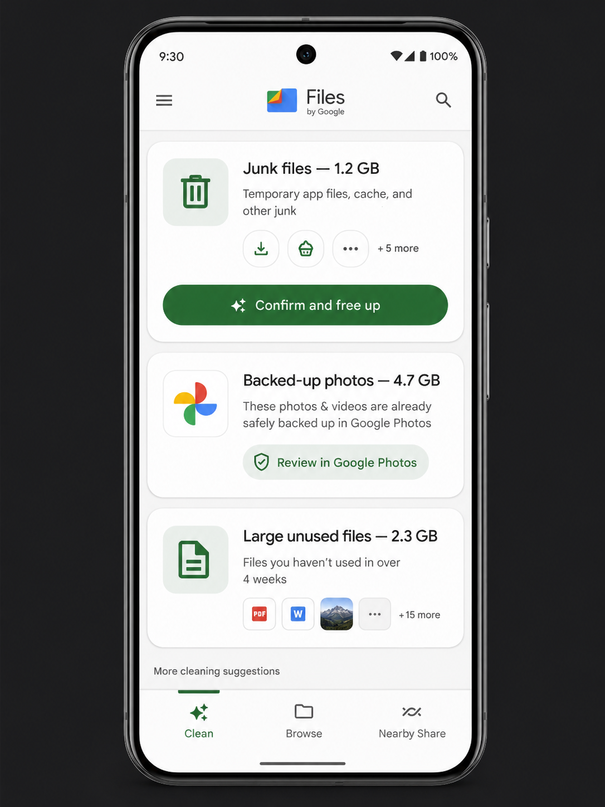

First — check your Android storage breakdown
Before clearing anything, spend 30 seconds looking at what's actually using your storage. On most Android phones: Settings → Storage. The exact label varies by manufacturer — Samsung calls it "Battery and device care → Storage", Pixel calls it "Storage". You'll see a bar broken into Images, Videos, Audio, Apps, Files, and System.
The largest category is where to start. If Images or Videos is the biggest, begin with Google Photos. If Apps is the largest, start with app caches and unused apps. If it's unclear, start with Method 1 — Google Files handles multiple categories automatically.
Android is not uniform — Samsung, Google, OnePlus, Xiaomi, and others have different settings menu structures. If a path in this guide doesn't match your phone exactly, search "Storage" in your phone's Settings search bar to find the equivalent screen.

The Android Storage screen shows your full breakdown by category. The largest segments tell you exactly which methods below to prioritise.
Method 1 — Google Files: the automatic option
Files by Google (pre-installed on Pixel phones; free to download on any Android) is the fastest way to clean up because it analyses your storage automatically and surfaces suggestions — junk files, app caches, backed-up photos, and large unused files — all in one place.
-
1
Open Files by Google → tap "Clean"
If you don't have it, download it from the Play Store — it's free and made by Google. The Clean tab runs automatically when you open it.
-
2
Review the categories it finds
Typical suggestions: Junk files (app caches and temp files), backed-up photos (safe to delete from device once in Google Photos), large files, and apps you haven't used in months.
-
3
Tap "Confirm and free up" for each category
You can review items before deleting. Junk files are always safe to clear — they're temporary files that apps re-create as needed.
On a typical phone that hasn't been cleaned in 6–12 months, Files by Google finds 1–4 GB of safe-to-delete junk in under two minutes. Do this first before any manual methods — it's the highest effort-to-reward ratio on Android.
Method 2 — Google Photos Smart Storage
Photos and videos are typically the largest storage category on any Android phone. Google Photos offers a feature called Free Up Space (previously called Smart Storage) that automatically removes photos and videos from your device storage once they've been safely backed up to Google Photos — without deleting them from your library.
-
1
Ensure Google Photos backup is on
Open Google Photos → tap your profile icon → Photos settings → Back up & sync → toggle on. Wait for backup to complete before proceeding (check the backup status under your profile icon).
-
2
Tap your profile icon → Free up space
Google Photos shows how many backed-up photos and videos are still stored on your device and how much space you'll reclaim by removing them.
-
3
Tap "Free up [X] GB"
The photos are deleted from local device storage only — they remain fully accessible in Google Photos and re-download in seconds when you view them.
Only run "Free up space" after Google Photos confirms all items are backed up. Under your profile icon, the backup status should say "Backup is on" or "Backed up" — not "Waiting for Wi-Fi" or "Backup paused". Freeing up non-backed-up photos deletes them permanently.

Files by Google surfaces actionable suggestions in one tap — junk files, backed-up photos, and large unused files — making it the fastest starting point on any Android phone.
Method 3 — Clear app caches
Every Android app stores cached data — temporary files that help it load faster. Over months, this accumulates into gigabytes of data that serves no lasting purpose. Clearing an app's cache removes these temporary files without affecting your app settings, login state, or saved data.
Clear cache for a single app
-
1
Settings → Apps (or Application Manager)
On Samsung: Settings → Apps. On Pixel: Settings → Apps. Exact name varies but all Android phones have this screen.
-
2
Tap the app → Storage → Clear Cache
You'll see two numbers: Storage (the app itself plus its saved data) and Cache. Tap Clear Cache only — not Clear Data, which resets the app to factory settings and removes your login and settings.
Apps to prioritise for cache clearing (typically the largest caches):
- Chrome / Samsung Internet: Clear browsing data → Cached images and files → Last 4 weeks or All time
- Instagram: Settings → Apps → Instagram → Storage → Clear Cache
- TikTok: In-app Settings → Clear Cache
- Spotify: In-app Settings → Storage → Clear Cache
- Facebook: Settings → Apps → Facebook → Storage → Clear Cache
- Google Maps: Settings → Apps → Maps → Storage → Clear Cache (offline maps stay)
Method 4 — Delete offline media
Streaming apps that allow offline downloads are one of the biggest silent consumers of Android storage — and everything here is completely safe to delete because it can be streamed or re-downloaded at any time.
- Netflix: Downloads section → delete watched films and episodes
- Spotify: Settings → Storage → Delete Cache; remove offline playlists under Your Library
- YouTube Premium: Library → Downloads → tap each video to remove it
- Podcasts (Google): Downloads → swipe to delete finished episodes
- Audible: Library → swipe on title → Remove from Device
Method 5 — Uninstall large unused apps
Sort your apps by storage size to find the biggest targets. On most Android phones: Settings → Storage → Apps (or Settings → Apps → sort by size). Work through the largest apps and uninstall anything you haven't used in months.
Unlike iPhone, standard Android doesn't have an "Offload" option — deleting an app removes both the app and its data. Before uninstalling, check whether the app's data is synced to a cloud service (most modern apps are). For apps that store data locally with no cloud backup, export or transfer important data first.
Method 6 — Move large files to Google Drive
Large files in your Downloads folder, documents, and recordings that you want to keep but don't need on-device can be moved to Google Drive (15 GB free) to free up local storage while keeping them accessible everywhere.
-
1
Open Files by Google → Browse → Downloads
Sort by size (three-dot menu → Sort by size). The largest files appear first.
-
2
Long-press a large file → Share → Save to Drive
The file uploads to Google Drive. Once you confirm it's there, you can safely delete the local copy.
-
3
Delete the local copy
Long-press the file in Files by Google → Delete. The file now lives in Google Drive, accessible from any device.
Quick wins — ranked by impact
| Action | Time | Typical saving | Difficulty |
|---|---|---|---|
| Files by Google → Clean (junk files) | 2 min | 1 – 4 GB | Easy |
| Google Photos → Free Up Space | 2 min | 3 – 15 GB | Easy |
| Delete streaming downloads | 5 min | 2 – 8 GB | Easy |
| Clear Chrome / browser cache | 1 min | 200 MB – 1.5 GB | Easy |
| Clear Instagram / TikTok cache | 3 min | 300 MB – 2 GB | Easy |
| Uninstall large unused apps | 5 min | 1 – 6 GB | Easy |
| Move large Downloads to Google Drive | 10 min | Varies | Medium |